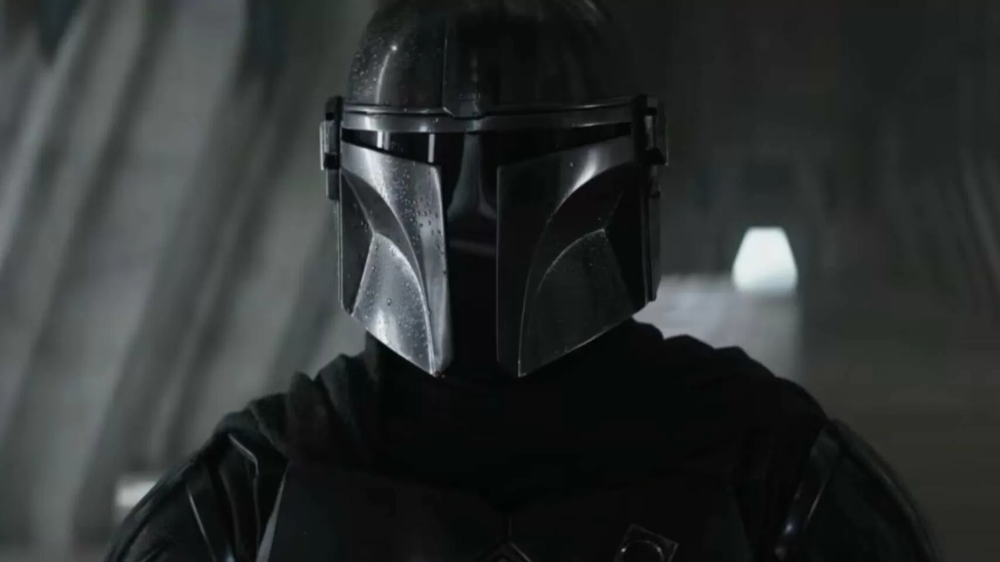

La película 'The Mandalorina & Grogu' presenta a un antiguo y misterioso Jedi y revoluciona a los fans de Star Wars
Los nuevos artes conceptuales de la película de 'The Mandalorian' están revolucionando a los seguidores de Star Wars tras la presentación de un antiguo y misterioso Jedi.
El universo de Star Wars está cociendo a fuego lento su regreso a salas cinematográficas. La saga galáctica de George Lucas se alejó de la gran pantalla tras la crítica y controvertida 'El ascenso de Skywalker', filme que puso el fin a la trilogía de secuelas de forma un tanto polémica, rescatando a personajes de la obra original de forma un tanto injustificada y con argumentos pbres. Disney+ ha sido el refugio de la franquicia desde hace años, pero desde Lucasfilm. 'The Mandalorian & Grogu' será uno de esos proyectos dará el salto al formato audiovisual más grande, sirviendo como continuación de la tercera y fallida temporada de la serie de Jon Favreau. Habiendo confirmado nuevas estrellas para su reparto, ahora se desvelan artes conceptuales han enamorado a los espectadores.

La película 'The Mandalorina & Grogu' presenta a un antiguo y misterioso Jedi y revoluciona a los fans de Star Wars
Los artes conceptuales de 'The Mandalorian & Grogu' corren a cargo de Melany Maximus y son extremadamente reveladores. Por un lado tenemos la representación de Mandalore en su era dorada mediante un entorno de vegetación muy rico. En la tercera temporada de la serie de Jon Favreau y Dave Filoni vimos el planeta de origen de Mando desértico y abandonado, en muy mal estado, pero en su dia fue un lugar bello y con mucha vida